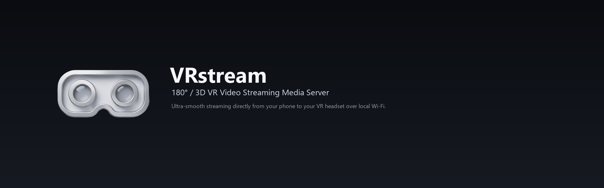

Local media playback
Browse and play the media files you choose to share, served directly from your device.
VRstream is a free, local-network DLNA/UPnP media server. Share folders from your phone or computer and play VR180, 3D SBS, top/bottom, and regular video on Meta Quest, TVs, and other DLNA clients — original files, no cloud, no transcoding.

Only features available in the current app are listed here.
Browse and play the media files you choose to share, served directly from your device.
Share VR180 and 3D SBS / top-bottom content for compatible headsets and players.
Automatic discovery on your local network with byte-range requests for seeking in large files.
Choose a custom photo or looping video wallpaper inside the app.
Your media stays on your device. No account, cloud storage, or developer-side data collection.
Released under the MIT license. Third-party notices are listed on the licenses page.